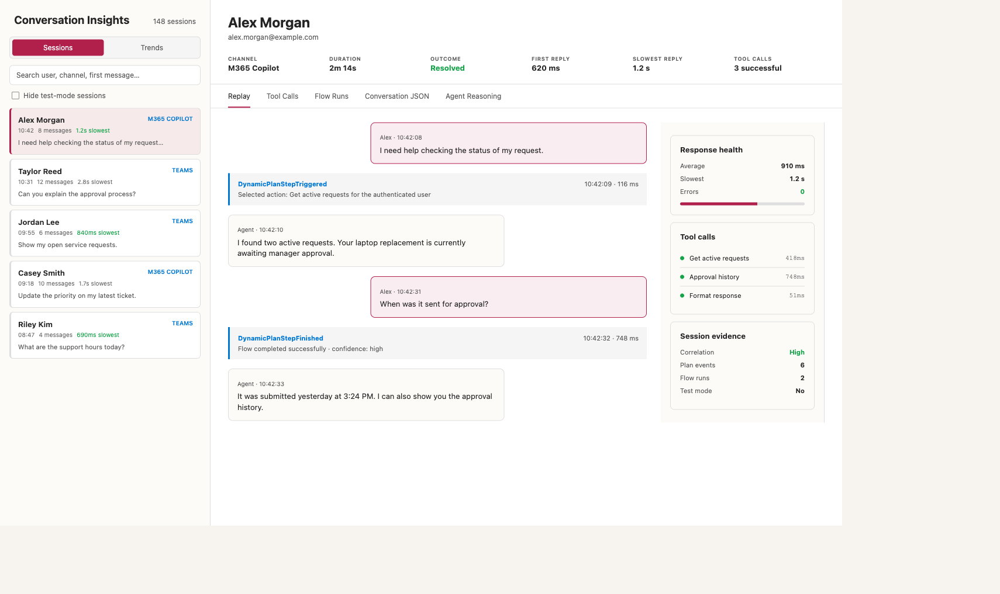

End-user attribution
Resolve from.aadObjectId to the corresponding Dataverse system user.

Investigate conversations, orchestration, tool and flow failures, and billed or non-billed Copilot Credit consumption. All inside your Dataverse environment.
Version 1.1.0.0 · Managed Dataverse solution · MIT licensed
The standard Monitor export summarizes a session. MCS Transcript Analyzer preserves the activity stream and turns it into a support-ready investigation surface.
Resolve from.aadObjectId to the corresponding Dataverse system user.
Track first, average, and slowest replies, plus the delay on each conversation turn.
Inspect DynamicPlan events to understand which topic or action the orchestrator selected.
Review connector and AI Builder invocations, duration, output, and exceptions where available.
Match Power Automate runs to session windows and surface failed or unusually slow actions.
Review billed and non-billed usage, capacity, freshness, resource trends, and privacy-controlled user consumption.
The solution reads the Dataverse conversationtranscripts activity payload, which retains details that are absent from the analytics export.
| Evidence | Monitor export | MCS Transcript Analyzer |
|---|---|---|
| End-user identity | Not included | Resolved from Entra object ID |
| Conversation activity stream | Session summary | Full Bot Framework activity JSON |
| Orchestration events | Not included | DynamicPlan trace |
| Per-turn latency | Not included | Calculated in milliseconds |
| Automated incremental sync | Manual export | Custom API and scheduled flow |
A sandboxed Dataverse plugin incrementally parses finalized transcripts. A recurrence flow drains the backlog without an external host or stored access token.
Bot Framework activities stored in Dataverse after each session.
Parses identity, turns, latency, plans, tool calls, and outcomes.
Dataverse tables, model-driven app, forms, views, and searchable JSON.
Additive by default. Finalized transcripts are treated as immutable. Reprocessing is an explicit operation, and the watermark freezes when a batch fails so a bad record cannot be silently skipped.
Use a sandbox first. You need a Dataverse environment with Copilot Studio transcripts enabled and permission to import solutions.
Keep the archive intact. Power Apps imports the ZIP directly; do not extract it.
Open Solutions, choose Import solution, upload the ZIP, and complete the import wizard.
Bind pvci_dataversesync to Dataverse and pvci_licensinghttp to Web Contents, then set the required pvci_CreditReportingTenantId environment variable.
Run transcript sync once to load finalized sessions, then run credit collection to verify licensing API access. Future batches run on their schedules.
Grant app and Dataverse access, then follow the permissions and inventory checklist for collector and cross-environment roles.
pac solution import --path pvConversationInsights-managed-1.1.0.0.zip --activate-plugins
The React code app adds conversation replay, trends, tool and flow drill-down, a visual execution map, and scoped Copilot Credit analysis. It is packaged separately so production users can install the supported model-driven solution without taking a dependency on preview technology.
The solution makes observed platform behavior visible, but it cannot manufacture telemetry that Copilot Studio or Power Automate did not retain.
DialogTracing is emitted in maker-portal design mode, not production Teams or Microsoft 365 Copilot channels. Production analysis uses coarser DynamicPlan events.
Power Automate flow runs do not carry the transcript conversation ID. Correlation uses overlapping time windows and reports ambiguous matches.
Restrict table privileges, define retention, and enable auditing according to your privacy and compliance requirements.